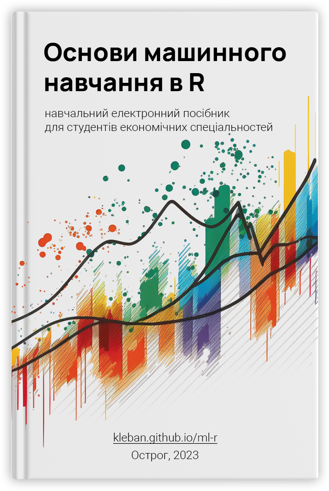

Основи машинного навчання в R
Навчальний посібник з курсу Прикладне математичне моделювання в R для студентів спеціальності економічна кібернетика, фінанси та кредит, 3 курс


Про посібник
Замінити інформацію про курс Аналіз даних
Матеріали навчального посібника підготовлені для читання курсу “Вступ до прикладного програмування в R” [05.250] студентам 1-го року навчання спеціальності економічна кібернетика Національного університету “Острозька академія”.
Опис навчальної дисципліни
Навчальна дисципліна спрямована на вивчення основ практичного застосування популярної мови R для проведення статистичних досліджень в економіці.
У процесі вивчення курсу розглядаються теми, що стосуються теоретичних основ та практичної реалізації алгоритмів, завантаження, підготовки та обробки економічних даних.
Місце навчальної дисципліни у підготовці здобувачів: програмні результати дисципліни використовуються під час вивчення таких навчальних дисциплін: “Алгоритми та структури даних”, “Аналіз даних в R”, “Прикладне математичне моделювання в R”, “Підготовка аналітичних звітів”. Закріплення на практиці здобутих програмних результатів відбувається під час проходження навчальної практики з курсу “Економіко-математичне моделювання”.
Мета дисципліни
Мета навчальної дисципліни – формування у студентів теоретичних знань та практичних навичок використання мови програмування R для роботи з даними та базовими структурами мови (типи даних, розгалуження, цикли, функції).
Підтримка проєкту
Матеріали навчального посібника створено у межах проєкту “Підготовка, обробка та ефективне використання даних для наукових досліджень (на основі R)”, що підтримується Європейським союзою за програмою House of Europe.

Дотримання принципів доброчесності
Викладач та слухач цього курсу, як очікується, повинні дотримуватися Кодексу академічної доброчесності університету:
будь-яка робота, подана здобувачем протягом курсу, має бути його власною роботою здобувача; не вдаватися до кроків, що можуть нечесно покращити Ваші результати чи погіршити/покращити результати інших здобувачів;
якщо буде виявлено ознаки плагіату або іншої недобросовісної академічної поведінки, то студент буде позбавлений можливості отримати передбачені бали за завдання;
не публікувати у відкритому доступі відповіді на запитання, що використовуються в рамках курсу для оцінювання знань здобувачів;
під час фінальних видів контролю необхідно працювати самостійно; не дозволяється говорити або обговорювати, а також не можна копіювати документи, використовувати електронні засоби отримання інформації.
Порушення академічної доброчесності під час виконання контрольних завдань призведе до втрати балів або вживання заходів, які передбачені Кодексу академічної доброчесності НаУОА.
Матеріали курсу створені з використанням ряду технологій та середовищ розробки:
Мова
R- безкоштована мова програмування для виконання досліджень у сфері статистики, машинного навчання та візуалізацї результатів.QuartoBook - система для публікації наукових та технічних текстів з відкритим кодом (R/Python/Julia/Observable).JupyterLab- середовище розробки на основіJupyter Notebook.JupyterLabє розширеним веб-інтерфейсом для роботи з ноутбуками.Git/Github- система контролю версій та, відповідно, сервіс для організації зберігання коду, а також публікації статичних сторінок.RStudio Desktop- інтегроване середовище розробки (IDE) для мовиRз відкритим кодом, що містить в собі редактор коду, консоль, планер, засоби візуалізації та можливості.Visual Studio Code- інтегроване середовище розробки (IDE) з відкритим кодом практично для усіх відомих технологій та мов програмування.
Бібілографічний опис bibtex: